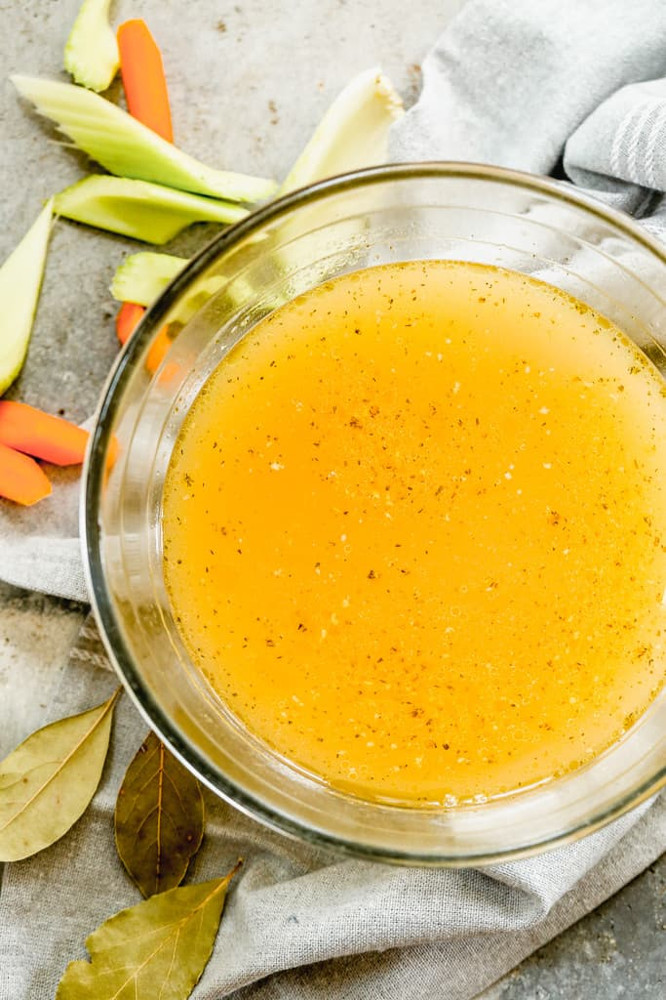

Home-made Chicken Stock

Description
Flavourful. Comforting. Oh-so-versatile. Chicken stock is a hands-down stellar basic. Use it in sauces, stews, or soup for amazing flavour Or drink it, straight-up... just pour yourself a big, warm cup and fill-up on some nutrient-packed deliciousness.
Ingredients
- 1 (1.5 kg) whole chicken
- 2 tbsp olive oil
- 1 (60 g) carrot, chopped
- 1 (110 g) yellow onion, sliced
- 1 (90 g) leek, thinly sliced
- 2 garlic cloves, minced
- 1 tbsp dried thyme
- 1 bay leaf
- 1 tsp peppercorns, white
- 1.4 litres water
- salt to taste
Instructions
- Brown the vegetables in olive oil in a big pot, preferably one made of enamelled cast iron, until they have a nice colour
- Split the chicken down the middle and put both halves in the pot. Pour water and spices into the pot. Put the lid on, lower the heat, and let simmer for two hours.
- Take out the chicken and remove its bones. Save the meat.
- Do you like crispy chicken skin? Then spread out the chicken skin pieces on an oven sheet lined with parchment paper, add spices to taste, and bake in the oven at 400°F (200°C) for about 15 minutes or until they are crispy.
- Crack the chicken bones and break them up into smaller pieces. Put the bones back into the pot and simmer for about three more hours.
- Filter the stock through a fine strainer and pour the stock back into the pot. Reduce to half or more, depending on how rich you want your stock to be. The stock isn't supposed to boil vigorously; just let it simmer over medium-low heat. Season with salt to taste towards the end.
- Store in the fridge for 2-3 days or freeze in smaller packages for up to three months. It's perfect to use as a natural flavour enhancer in soups, pots and sauces.
Tips
- Feel free to use the chicken meat in a classic chicken soup. Or, why not use it in a tasty dip with mayonnaise, sour cream, and curry?
Using a slow cooker
- In a large pan, brown the vegetables in olive oil and then transfer them into the slow cooker.
- Leave the chicken in one piece and combine the ingredients in a slow cooker.
- Cook on high for three hours.
- Remove the meat, switch temperature to low, and cook the bones for at least eight more hours (the longer, the better).
- Add to a saucepan without a lid and reduce on low to medium heat until you reach the desired concentration.
Nutrients
| Carbs |
Protein |
Fat |
Calories |
Fibre |
Sugar |
Sodium |
Calcium |
Sat |
GL |
| (g) |
(g) |
(g) |
(kCal) |
(g) |
(g) |
(mg) |
(mg) |
Fat (g) |
|
| 1.57 |
2.5 |
12.82 |
220.25 |
0.38 |
0.64 |
200.75 |
22.45 |
3.41 |
0.26 |
Back to top of page